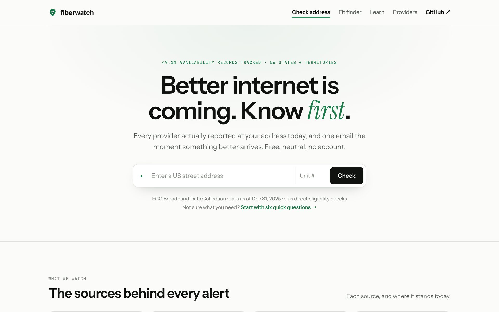

FiberWatch
See every internet provider at a US address, and get an email when a better one shows up.

Why I built it
The comparison sites show what's at an address today. They're often wrong, and they get paid to send you to a provider. None of the ones I looked at will watch an address and tell you when something changes.
So that's what FiberWatch does. You type an address in once, and you get an email when something better shows up.
What it does
- Address lookup. It lists every provider that reports coverage there with the real speed tiers, and that covers fiber, cable, fixed wireless and satellite. You don't need an account.
- A watch on your address. If a new provider, a new technology or a real jump in speed shows up, you get one email.
- A weekly job that picks up each new FCC filing and processes it without anyone touching it.
- A summary in plain words of what the options at an address mean.
How it works
- FCC filesProviders report where they offer service twice a year.
- DuckDBI process the bulk files offline into a small lookup for each census block.
- Your addressThe Census Bureau geocoder matches it to its block.
- SnapshotEach watched address keeps a record of what was available.
- CompareWhen a new filing comes in it gets compared with the snapshot, and a real change sends one email.
What was hard
The FCC data runs optimistic
The data is what providers say they cover, and audits have found it runs optimistic. So every result shows its filing date and tells you to confirm with the provider before you order.
49 million rows
Loading the raw files into a live database would've been slow and expensive. I do the heavy work offline in DuckDB, and the site just answers from a small lookup.
Checking providers directly
A few providers can be checked directly. I only run those checks for addresses someone asked to watch, I run them slowly, and the checker says who it is.